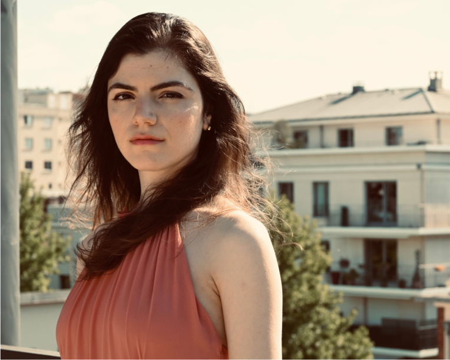
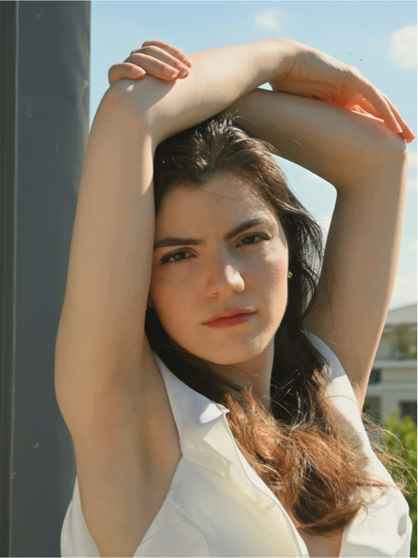

About — Tia-Lana Chinapyel — a magazine you can flip through
TIA-LANA · ISSUE 01
The
Portfolio
Issue
Colophon
Set in Archivo & Space Grotesk.
Details in Space Mono.
Grain, house-made.
“Thanks for looking.”— T.L.

Issue 01 · Paris · 2026
TIA-
TIA-
LANA
- The portrait that breaks the rules
- Inside the studio — p.03
- Headshots that don't lie
- + posters, brand & grain
Tia-Lana MagazineAbout · 02
The interview
Making images,
morning & night.
I make images. Sometimes I capture them, sometimes I invent them. Photographer in the morning, art director in the afternoon — and the other way around the next day.
I work between portrait, headshot and design. I like brands that have something to say and faces that don't lie. It starts with a notebook, a location scout, an idea jotted down too fast.
Based in Paris, in love with grain, neon and 35mm. A curious mind, always building.
“A good image is a well-framed secret.”2
Career03
The résumé
The career
so far.

- 2017Founded the studio — Paris.
- 2019First film-poster commissions.
- 2021Editorial & brand direction.
- 2023Portrait series & exhibitions.
- 2026Studio, full art direction.
Craft04
What she actually does
Three ways
to look.
- Portrait
- Editorial & personal, shot on 35mm.
- Headshot
- Studio — clean, honest, timeless.
- Design
- Posters, brand systems, editions.
- Tools
- 35mm · medium format · print.
“Direct, wait, miss, start again, catch the instant.”4
Selected05
The contact sheet
On the wall.




Flip through · use the arrows